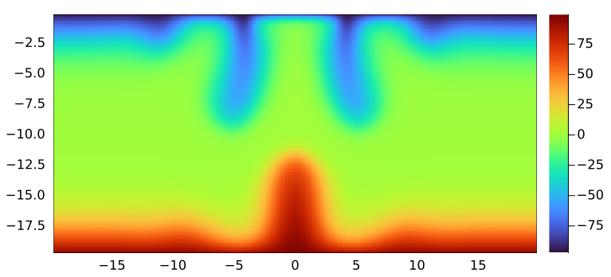

Agenda
📚 Multi-xPU thermal porous convection 3D
💻 Automatic documentation and CI
🚧 Project:
Multi-xPU thermal porous convection 3D
Automatic documentation and CI
Projects
Create a multi-xPU version of the 3D thermal porous convection xPU code
Combine ImplicitGlobalGrid.jl and ParallelStencil.jl
Finalise the documentation of your project
Automatic documentation and CI
ImplicitGlobalGrid.jl (continued)In previous Lecture 10, we introduced ImplicitGlobalGrid.jl, which renders distributed parallelisation with GPU and CPU for HPC a very simple task.
Also, ImplicitGlobalGrid.jl elegantly combines with ParallelStencil.jl to, e.g., hide communication behind computation.
Let's step through the following content:
Create a multi-xPU version of your thermal porous convection 3D xPU code you finalised in lecture 8
Keep it xPU compatible using ParallelStencil.jl
Deploy it on multiple xPUs using ImplicitGlobalGrid.jl
👉 You'll find a version of the PorousConvection_3D_xpu.jl code in the solutions folder on Moodle after exercises deadline if needed to get you started.
Only a few changes are required to enable multi-xPU support, namely:
Copy your working PorousConvection_3D_xpu.jl code developed for the exercises in Lecture 8 and rename it PorousConvection_3D_multixpu.jl.
Add at the beginning of the code
using ImplicitGlobalGrid
import MPIFurther, add global maximum computation using MPI reduction function to be used instead of maximum()
max_g(A) = (max_l = maximum(A); MPI.Allreduce(max_l, MPI.MAX, MPI.COMM_WORLD))In the # numerics section, initialise the global grid right after defining nx,ny,nz and use now global grid nx_g(),ny_g() and nz_g() for defining maxiter and ncheck, as well as in any other places when needed.
nx,ny = 2 * (nz + 1) - 1, nz
me, dims = init_global_grid(nx, ny, nz) # init global grid and more
b_width = (8, 8, 4) # for comm / comp overlapModify the temperature initialisation using ImplicitGlobalGrid's global coordinate helpers (x_g, etc...), including one internal boundary condition update (update halo):
T = @zeros(nx, ny, nz)
T .= Data.Array([ΔT * exp(-(x_g(ix, dx, T) + dx / 2 - lx / 2)^2
-(y_g(iy, dy, T) + dy / 2 - ly / 2)^2
-(z_g(iz, dz, T) + dz / 2 - lz / 2)^2) for ix = 1:size(T, 1), iy = 1:size(T, 2), iz = 1:size(T, 3)])
T[:, :, 1 ] .= ΔT / 2
T[:, :, end] .= -ΔT / 2
update_halo!(T)
T_old = copy(T)Prepare for visualisation, making sure only me==0 creates the output directory. Also, prepare an array for storing inner points only (no halo) T_inn as well as global array to gather subdomains T_v
if do_viz
ENV["GKSwstype"]="nul"
if (me==0) if isdir("viz3Dmpi_out")==false mkdir("viz3Dmpi_out") end; loadpath="viz3Dmpi_out/"; anim=Animation(loadpath,String[]); println("Animation directory: $(anim.dir)") end
nx_v, ny_v, nz_v = (nx - 2) * dims[1], (ny - 2) * dims[2], (nz - 2) * dims[3]
(nx_v * ny_v * nz_v * sizeof(Data.Number) > 0.8 * Sys.free_memory()) && error("Not enough memory for visualization.")
T_v = zeros(nx_v, ny_v, nz_v) # global array for visu
T_inn = zeros(nx - 2, ny - 2, nz - 2) # no halo local array for visu
xi_g, zi_g = LinRange(-lx / 2 + dx + dx / 2, lx / 2 - dx - dx / 2, nx_v), LinRange(-lz + dz + dz / 2, -dz - dz / 2, nz_v) # inner points only
iframe = 0
endMoving to the time loop, add halo update function update_halo! after the kernel that computes the fluid fluxes. You can additionally wrap it in the @hide_communication block to enable communication/computation overlap (using b_width defined above)
@hide_communication b_width begin
@parallel compute_Dflux!(qDx, qDy, qDz, Pf, T, k_ηf, _dx, _dy, _dz, αρg, _1_θ_dτ_D)
update_halo!(qDx, qDy, qDz)
endApply a similar step to the temperature update, where you can also include boundary condition computation as following (⚠️ no other construct is currently allowed)
@hide_communication b_width begin
@parallel update_T!(T, qTx, qTy, qTz, dTdt, _dx, _dy, _dz, _1_dt_β_dτ_T)
@parallel (1:size(T, 2), 1:size(T, 3)) bc_x!(T)
@parallel (1:size(T, 1), 1:size(T, 3)) bc_y!(T)
update_halo!(T)
endUse now the max_g function instead of maximum to collect the global maximum among all local arrays spanning all MPI processes. Use it in the timestep dt definition and in the error calculation (instead of maximum).
# time step
dt = if it == 1
0.1 * min(dx, dy, dz) / (αρg * ΔT * k_ηf)
else
min(5.0 * min(dx, dy, dz) / (αρg * ΔT * k_ηf), ϕ * min(dx / max_g(abs.(qDx)), dy / max_g(abs.(qDy)), dz / max_g(abs.(qDz))) / 3.1)
endMake sure all printing statements are only executed by me==0 in order to avoid each MPI process to print to screen, and use nx_g() instead of local nx in the printed statements when assessing the iteration per number of grid points.
Update the visualisation and output saving part
# visualisation
if do_viz && (it % nvis == 0)
T_inn .= Array(T)[2:end-1, 2:end-1, 2:end-1]; gather!(T_inn, T_v)
if me == 0
p1 = heatmap(xi_g, zi_g, T_v[:, ceil(Int, ny_g() / 2), :]'; xlims=(xi_g[1], xi_g[end]), ylims=(zi_g[1], zi_g[end]), aspect_ratio=1, c=:turbo)
# display(p1)
png(p1, @sprintf("viz3Dmpi_out/%04d.png", iframe += 1))
save_array(@sprintf("viz3Dmpi_out/out_T_%04d", iframe), convert.(Float32, T_v))
end
endFinalise the global grid before returning from the main function
finalize_global_grid()
returnIf you made it up to here, you should now be able to launch your PorousConvection_3D_multixpu.jl code on multiple GPUs. Let's give it a try 🔥
Make sure to have set following parameters:
lx,ly,lz = 40.0, 20.0, 20.0
Ra = 1000
nz = 63
nx,ny = 2 * (nz + 1) - 1, nz
b_width = (8, 8, 4) # for comm / comp overlap
nt = 500
nvis = 50Then, launch the script on Piz Daint on 8 GPU nodes upon adapting the the runme_mpi_daint.sh or sbatch sbatch_mpi_daint.sh scripts (see here) 🚀
The final 2D slice (at ny_g()/2) produced should look as following and the code takes about 25min to run:

Running the code at higher resolution (508x252x252 grid points) and for 6000 timesteps produces the following result
PorousConvection subfolder in your private GitHub repo. The git commit hash (or SHA) of the final push needs to be uploaded on Moodle (more).homework-8 branch, create a new git branch named homework-11 in order to build upon work performed for homework 8.👉 See Logistics for submission details.
The goal of this exercise is to:
Further familiarise with distributed computing
Combine ImplicitGlobalGrid.jl and ParallelStencil.jl
Learn about GPU MPI on the way
In this exercise, you will:
Create a multi-xPU version of the 3D thermal porous convection code from lecture 8
Keep it xPU compatible using ParallelStencil.jl
Deploy it on multiple xPUs using ImplicitGlobalGrid.jl
👉 You'll find a version of the PorousConvection_3D_xpu.jl code on Moodle after exercises deadline if needed to get you started.
Copy the PorousConvection_3D_xpu.jl code from exercises in Lecture 8 and rename it PorousConvection_3D_multixpu.jl.
Refer to the steps outlined in the Multi-xPU 3D thermal porous convection section from the lecture to implement the changes needed to port the 3D single xPU code (from Lecture 8) to multi-xPU.
Upon completion, verify the script converges and produces expected output for following parameters:
lx,ly,lz = 40.0, 20.0, 20.0
Ra = 1000
nz = 63
nx,ny = 2 * (nz + 1) - 1, nz
b_width = (8, 8, 4) # for comm / comp overlap
nt = 500
nvis = 50Use 8 GPUs on Daint.Alps adapting the runme_mpi_daint.sh or sbatch sbatch_mpi_daint.sh scripts (see here) to use CUDA-aware MPI 🚀
The final 2D slice (at ny_g()/2) produced should look similar as the figure depicted in Lecture 11.
Now that you made sure the code runs as expected, launch PorousConvection_3D_multixpu.jl for 2000 steps on 8 GPUs at higher resolution (global grid of 508x252x252) setting:
nz = 127
nx,ny = 2 * (nz + 1) - 1, nz
nt = 2000
nvis = 100and keeping other parameters unchanged.
Use sbtach command to launch a non-interactive job which may take about 5h30-6h to execute.
Produce a figure or animation showing the final stage of temperature distribution in 3D and add it to a new section titled ## Porous convection 3D MPI in the PorousConvection project subfolder's README.md. You can use the Makie visualisation helper script from Lecture 8 for this purpose (making sure to adapt the resolution and other input params if needed).
👉 See Logistics for submission details.
The goal of this exercise is to:
write some documentation
using doc-strings
using Literate.jl
One task you've already done, namely to update the README.md of this set of exercises!
Tasks:
Add doc-string to the functions of following scripts:
PorousConvection_3D_xpu.jl
PorousConvection_3D_multixpu.jl
Add to the PorousConvection folder a Literate.jl script called bin_io_script.jl that contains and documents following save_array and load_array functions you may have used in your 3D script
"""
Some docstring
"""
function save_array(Aname,A)
fname = string(Aname,".bin")
out = open(fname,"w"); write(out,A); close(out)
end
"""
Some docstring
"""
function load_array(Aname,A)
fname = string(Aname,".bin")
fid=open(fname,"r"); read!(fid,A); close(fid)
endAdd to the bin_io_script.jl a main() function that will:
generate a 3x3 array A of random numbers
initialise a second array B to hold the read-in results
call the save_array function and save the random number array
call the load_array function and read the random number array in B
return B
call the main function making and plotting as following
B = main()
heatmap(B)Make the Literate-based workflow to automatically build on GitHub using GitHub Actions. For this, you need to add to the .github/workflow folder (the one containing your CI.yml for testing) the Literate.yml script which we saw in this lecture's section Documentation tools: Automating Literate.jl.
That's all! Head to the Project section in Logistics for a check-list about what you should hand in for this project.
Enjoyed the course and want more? In the upcoming Spring Semester, we will offer Part II, in which your task will be to develop a new numerical code from scratch, using the knowledge acquired in this course. You will choose one project from three possible directions (A, B, or C):
Multi-GPU Navier–Stokes in 3D
Implement a simple Navier–Stokes solver using Chorin’s projection method and an advection scheme based on the method of characteristics. For the projection step, you will implement a Poisson solver for the pressure. You may reuse the pseudo-transient solver from class or implement your own (e.g., a multigrid solver or a Fourier-transform-based spectral solver). The only requirement is that your solver must run on GPUs and scale well. Feel free to take inspiration from the 2D reference implementation.
Free Convection Simulation
Use the ParallelStencil.jl miniapp as a starting point to implement your own 3D multi-GPU mantle convection solver.
Hydro-Mechanical Flow Localisation
Use the ParallelStencil.jl miniapp as a starting point to implement your own 3D multi-GPU hydro-mechanical “two-phase flow” solver capable of capturing the formation and propagation of solitary porosity waves.
Wave Physics
Elastic wave propagation is central to computational seismology, as it enables imaging of the subsurface, and it also has applications far beyond geosciences. Implement your 3D elastic wave solver, using the acoustic wave solver from the ParallelStencil.jl miniapp as a starting point. Alternatively, you may implement Maxwell’s equations to simulate the propagation of electromagnetic fields.
Show your creativity by proposing your own PDE-based problem—perhaps related to another project or to a future research direction. We’ll do our best to help you implement it. Relativistic MHD? Phase separation in alloys? Electromagnetic wave propagation? Spectral methods for PDEs? Name your topic! Ideally, bring relevant papers and equations.
If you are interested in GPU code optimisation, you can work through the advanced optimisation material (Lecture 12) and, for example, add shared-memory support and manual register queuing to accelerate the 3D thermal porous convection solver from class. Alternatively, pick one of the ParallelStencil.jl miniapps and optimise it further.